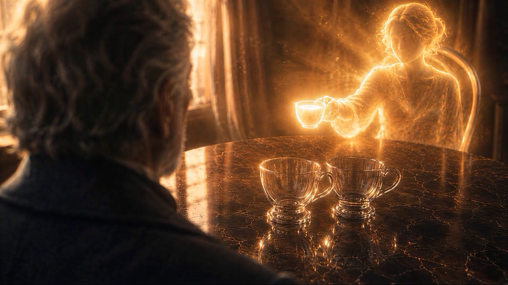
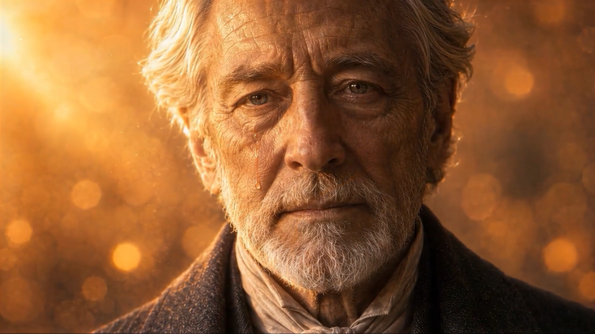

팔린드롬
Palindrome
LOGLINE
아내를 떠나보낸 노인의 하룻밤. 무너져 내리던 유리 세계가 거꾸로 흐르기 시작하고, 상실은 처음의 선물로 되돌아간다.
ABOUT THE FILM
대사 없이 빛과 음악만으로 진행되는 AI 무성영화. 제목처럼 영화 전체가 앞뒤 대칭의 팔린드롬 구조로 설계되었다 — 붕괴하던 유리 세계는 정확히 한가운데의 암전을 축으로 역행하며 창조로 뒤집히고, 음악 또한 같은 곡을 거울처럼 리버스해 화면의 대칭을 소리로 반복한다. 깨진 자리를 금으로 잇는 킨츠기처럼, 애도는 회복의 형식이 된다.
STILLS



CREDITS
- WRITTEN · DIRECTED · EDITEDAHN JAEKWON
- GENERATIVE AI · COMPOSITINGAHN JAEKWON
- PIPELINEGPT Image · Seedance 2.0 · After Effects · Topaz · Suno